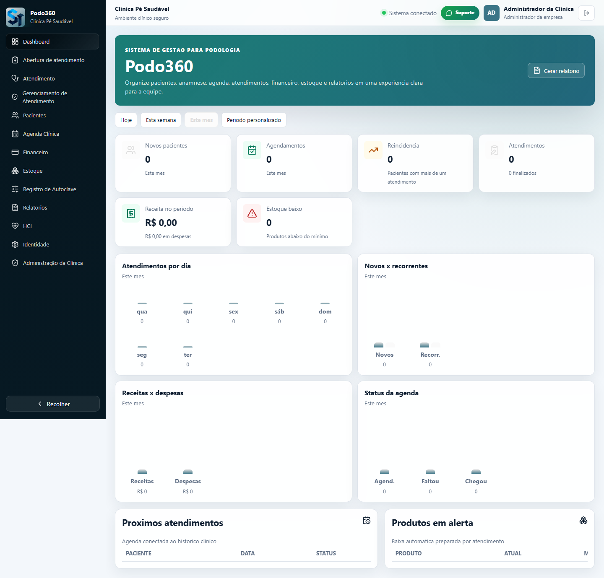
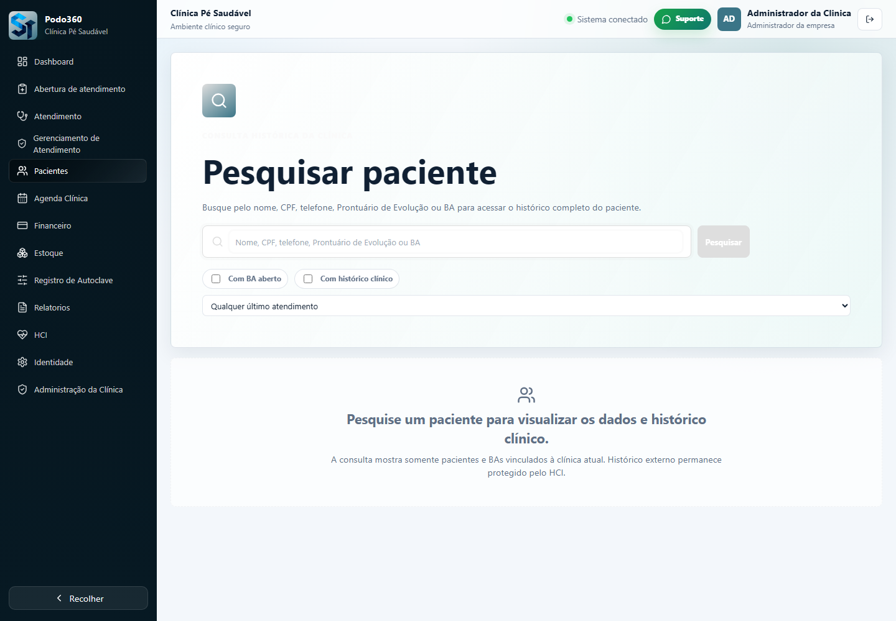
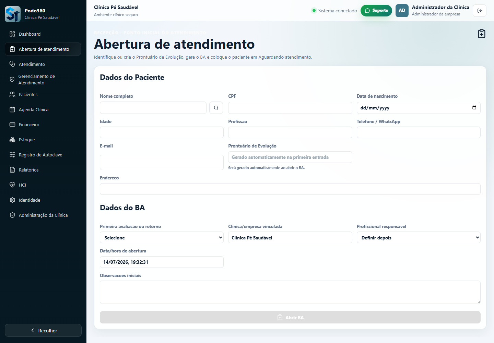
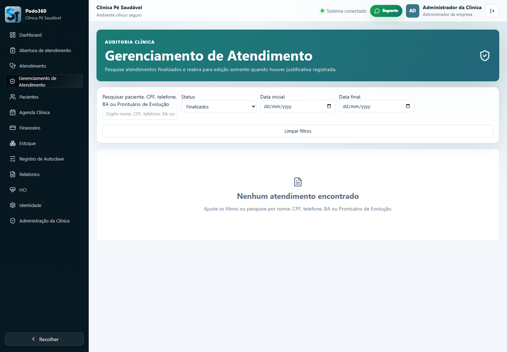
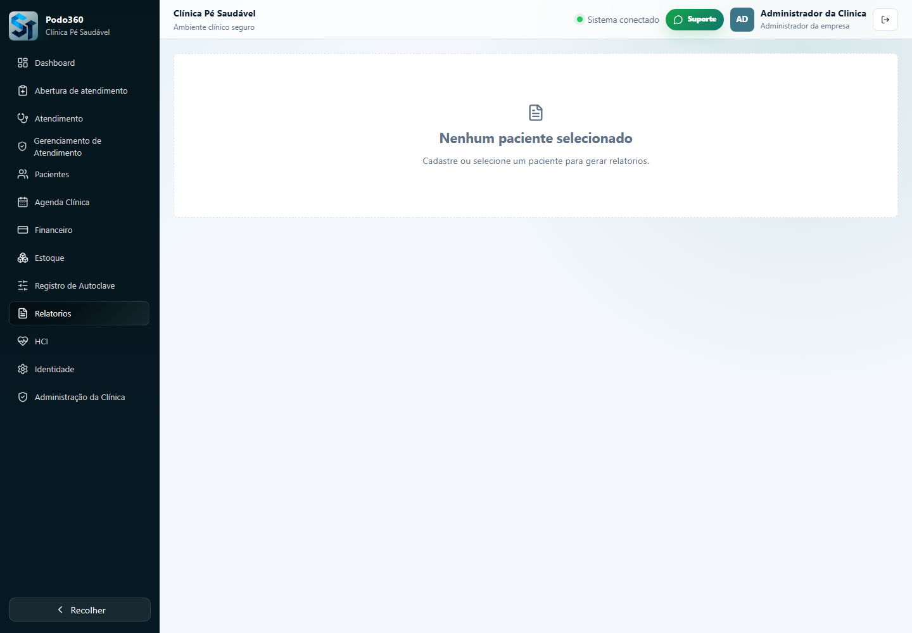
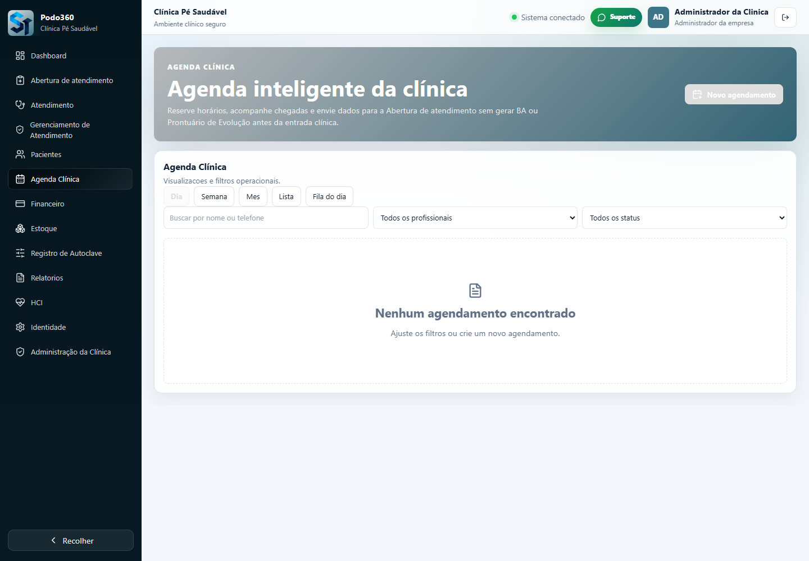
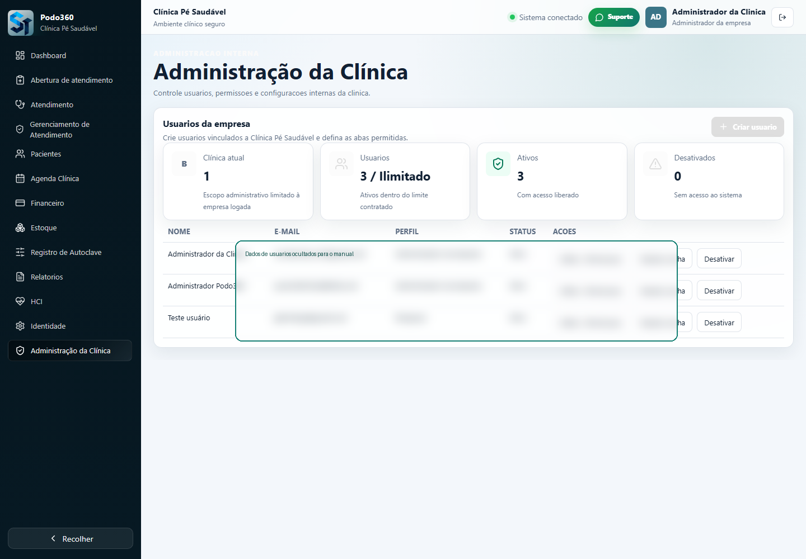

Manual do Administrador da Clinica - Podo360
Guia completo de uso do sistema clinico
Versao 1.0 - 14/07/2026
Apresentacao do Podo360
O Podo360 organiza a rotina clinica de podologia em um unico ambiente: pacientes, abertura de atendimento, BA, Prontuario de Evolucao, anamnese, agenda, imagens, relatorios, financeiro, estoque e usuarios da clinica. Este manual foi escrito para o administrador da clinica, que configura o sistema e apoia a equipe no uso diario.
Acesso ao sistema
Use o e-mail e a senha cadastrados para entrar. Cada pessoa deve usar seu proprio login. Ao sair, clique em Sair no menu lateral para encerrar a sessao com seguranca.
Dashboard
O Dashboard apresenta uma visao rapida da operacao: pacientes, agendamentos, atendimentos, recorrencia, financeiro e estoque. Use os filtros de periodo para acompanhar o movimento da clinica.

Print real da tela Dashboard.
Pacientes
A tela Pacientes permite pesquisar, cadastrar e acessar historicos. Confira nome, telefone, data de nascimento e documento antes de salvar. Evite duplicidade consultando o paciente antes de criar novo cadastro.

Print real da tela Pacientes.
Abertura de atendimento
A Abertura de atendimento e o ponto inicial da recepcao. Nela voce seleciona ou cadastra o paciente, confirma dados essenciais, gera o BA e coloca o atendimento na fila.

Print real da tela Abertura de atendimento.
Atendimento
A tela Atendimento lista os BAs em andamento e permite continuar o atendimento clinico. O profissional acessa o prontuario, registra anamnese, imagens e finaliza quando o atendimento estiver completo.

Print real da tela Atendimento.
Anamnese
A anamnese e modular. Preencha cada modulo com calma, salve as informacoes e revise antes de finalizar. Os dados alimentam o historico do paciente e os relatorios.
| Modulo | Uso |
|---|---|
| Identificacao | Confere dados basicos do paciente e do atendimento. |
| Queixa principal | Registra o motivo informado pelo paciente. |
| Medicamentos | Marque se usa medicamentos e descreva quando necessario. |
| Historico de Saude | Registra condicoes, alergias, cirurgias e historico relevante. |
| Avaliacao Podal | Organiza observacoes dos pes e sinais avaliados. |
| Edema | Registra presenca e grau quando aplicavel. |
| Avaliacao de Sensibilidade | Permite avaliar pe direito e esquerdo separadamente. |
| ITB | Indice tornozelo-braco, quando utilizado pela clinica. |
| IHB | Indice halux-braco, quando utilizado pela clinica. |
| Glicemia | Registro de valor e observacoes quando aplicavel. |
| Escala de EVA | Registra intensidade de dor percebida. |
| Diagnostico Ungueal | Apoia registro de alteracoes de unha, graus e observacoes. |
| Procedimento | Descreve tecnicas e itens realizados. |
| Curativo | Registra materiais e conduta. |
| Indicacao de tratamento | Registra laser, LED, alta frequencia, eletrocauterizacao e parametros. |
| Orientacoes Home Care | Instrui cuidados para casa. |
| Evolucao por Imagem | Anexa imagens de acompanhamento quando necessario. |
| Comparativo de Evolucao | Ajuda a comparar imagens e evolucao entre atendimentos. |
| Retorno | Registra data sugerida, se retornou e observacoes. |
Prontuario de Evolucao
O Prontuario de Evolucao acompanha o paciente ao longo dos atendimentos. Ele e vinculado ao paciente e aos BAs, permitindo consultar historico, imagens e evolucao clinica.
Gerenciamento de Atendimento
Use esta area para acompanhar status, finalizar, revisar e reabrir atendimentos quando necessario. Reaberturas devem ter justificativa, pois fazem parte da auditoria da clinica.

Print real da tela Gerenciamento de Atendimento.
Relatorios
Os relatorios consolidam dados clinicos e operacionais. Revise o conteudo antes de imprimir, salvar PDF ou enviar a terceiros.

Print real da tela Relatorios.
Agenda Clinica
A agenda permite visualizar compromissos, cadastrar horarios e acompanhar status como agendado, confirmado, chegou, falta ou cancelado.

Print real da tela Agenda Clinica.
Usuarios e Funcionarios
O administrador da clinica pode convidar usuarios, definir perfil, permitir abas e inativar acessos. Use perfis adequados para reduzir riscos e manter rastreabilidade.

Print real da tela Usuarios e Funcionarios.
Configuracoes da clinica
Em Configuracoes, ajuste identidade visual, logo, cores e dados comerciais exibidos no sistema.
Financeiro, Estoque e Autoclave
Essas areas ajudam no controle operacional: lancamentos financeiros, produtos, estoque baixo e registros de esterilizacao/autoclave.
Uploads e imagens
Use imagens apenas quando forem relevantes ao atendimento. Evite fotos com dados desnecessarios e confira se o arquivo certo foi anexado antes de salvar.
Permissoes e seguranca
Cada usuario deve ter login proprio. Nao compartilhe senha. Inative usuarios que sairam da equipe e revise permissoes periodicamente.
Duvidas frequentes
Esta secao resume situacoes comuns: esquecimento de senha, link expirado, BA duplicado, paciente nao encontrado, limite de usuarios e relatorio que nao abriu.
Suporte
Ao acionar suporte, informe seu nome, clinica, tela usada, horario aproximado, o que tentou fazer e uma captura da mensagem exibida.
Glossario
BA significa Boletim de Atendimento. Prontuario de Evolucao e o historico evolutivo do paciente. Finalizacao bloqueia edicao ate reabertura autorizada. Clinica suspensa tem acesso temporariamente indisponivel.
Botoes importantes
| Botao | Para que serve |
|---|---|
| Entrar | Acessa o sistema com e-mail e senha. |
| Sair | Encerra a sessao atual. |
| Novo paciente / Criar paciente | Inicia cadastro de paciente. |
| Salvar | Grava as informacoes preenchidas. |
| Cancelar | Fecha a acao sem salvar. |
| Abrir BA | Cria boletim de atendimento para o paciente. |
| Continuar atendimento | Abre atendimento em andamento. |
| Proximo / Avancar | Vai para o proximo modulo da anamnese. |
| Voltar | Retorna para etapa anterior. |
| Finalizar atendimento | Conclui o atendimento e bloqueia edicao. |
| Reabrir | Cancela finalizacao com justificativa. |
| Gerar relatorio | Monta relatorio conforme filtros. |
| Imprimir | Abre a impressao do navegador. |
| Exportar / Salvar PDF | Gera arquivo para guardar ou compartilhar. |
| Upload / Enviar imagem | Anexa logo ou imagem de evolucao. |
| Criar usuario | Convida novo funcionario da clinica. |
| Resetar senha | Envia instrucao de redefinicao ao usuario. |
| Inativar / Reativar | Bloqueia ou libera acesso de funcionario. |